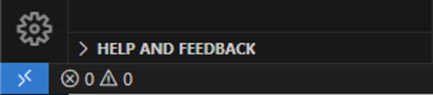

Connect Visual Studio Code to Files on Ubuntu#
The WSL extension in Visual Studio Code (VS Code) allows you to directly interact with the files you will create in your Ubuntu installation. You can enable and disable the “Remote Connection” to your Ubuntu instance as needed.
Review Existing Connections#
Your VS Code application may have automatically connected to your running Ubuntu instance when you installed the WSL extension. Look in the lower WSleft corner of your VS Code window to see the status of your remote connection.
If you see a blue box with two carats “><”, you are NOT connected to your Ubuntu instance.
If you see a blue box that says “WSL: Ubuntu”, you are already connected to your Ubuntu instance.

Connect to Ubuntu in VS Code#
If you are not connected to Ubuntu, you can do this in one of two ways using VS Code:
Click the blue box with the two carats in the lower-left corner of the VS Code window.
This will open a menu in the top center of the VS Code window.
From this menu, choose “Connect to WSL”
After a few moments the lower left corner of the VS Code window should show that you are connected to WSL: Ubuntu.
Alternatively, you can open VS Code and press
F1.
This will open the Command Palette in the top center of the VS Code window.
Start typing the command
WSL: Connect to WSLand select that command when it appears.After a few moments the lower left corner of the VS Code window should show that you are connected to WSL: Ubuntu.
Disconnect from Ubuntu in VS Code#
If you are connected to Ubuntu, you can disconnect at any time. This will allow you to work with files in your Windows OS. Again, you have two options.
Click the blue box that says “WSL: Ubuntu” in the lower-left corner of the VS Code window.
This will open a menu in the top center of the VS Code window.
From this menu, choose “Close Remote Connection”
After a few moments the lower left corner of the VS Code window should show that you are no longer connected to a remote.
Alternatively, you can open VS Code and press
F1.
This will open the Command Palette in the top center of the VS Code window.
Start typing the command
Remote: Close Remote Connectionand select that command when it appears.After a few moments the lower left corner of the VS Code window should show that you are no longer connected to a remote